故郷の風景、季節の移ろい、家族の情愛、日本の豊かな情感をさまざまに表現した童謡と唱歌。そして、今でも色あせることなく、私たちのこころに響き続ける昭和のヒット曲には、多くの夢や希望が詰まっています。時代を超えて感動する美しいメロディーと聴く人の心をとらえて離さない歌詞！ BS-TBS毎週火曜日夜7時から放送の人気番組「日本名曲アルバム」に出演する合唱団の垣根を越えて特別に編成されたドリームシンガーズが思い出の曲に新たな魅力を示して、60年代から70年代の懐かしの歌謡曲から童謡・唱歌まで珠玉のハーモニーで今、甦ります。どうぞご期待ください。
Concert コンサート情報＞ BS-TBS 「日本名曲アルバム」コンサート ドリームシンガーズ
|
福永 一博 / 指揮 東京藝術大学音楽学部卒業、同大学大学院音楽研究科修士課程修了。在学中にharmonia ensembleを立ち上げ、同合唱団を日本を代表する合唱団に導く。Ensemble OASIS&AQUA指揮者。東日本大震災復興支援「心に花を咲かせよう」プロジェクト代表。2015年に放送されたTBS金曜ドラマ「表参道高校合唱部！」では合唱指導・監修をつとめる。2016年度より桐朋学園大学音楽学部非常勤講師（合唱指揮）に就任する。 |
水野 彰子 / ピアノ 愛知県名古屋市出身。愛知県立明和高等学校音楽科、東京藝術大学ピアノ専攻、同大学院修士課程室内楽研究分野を首席で修了。大学院アカンサス音楽賞受賞。室内楽、声楽伴奏、合唱伴奏などアンサンブルピアニストとして活動している。FM-NHK「リサイタル・ノヴァ」、テレビ朝日「題名のない音楽会」出演。様々な音楽祭に出演。多くのオペラ歌手や弦楽器奏者、管楽器奏者と共演している。新国立劇場合唱団稽古、公演ピアニスト。 |
| 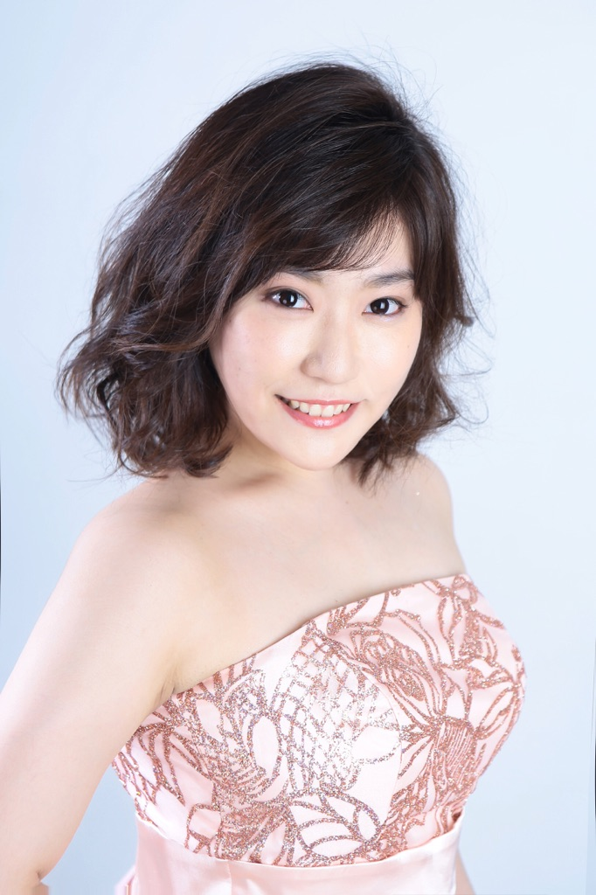 | 浅川礼奈 / ソプラノ 東京都出身。国立音楽大学附属中学校ピアノ科を卒業後、声楽科に転科。同高等学校声楽科、東京藝術大学声楽科ソプラノ専攻を卒業。現在、同大学大学院音楽研究科修士課程声楽専攻2年在学中。これまでに声楽を羽根田宏子、高橋大海、川上洋司、牧口純子、菅英三子の各氏に師事。第9回東京国際声楽コンクール新進声楽家部門にて第3位受賞。ラ・フォル・ジュルネTOKYO2018に出演。 |
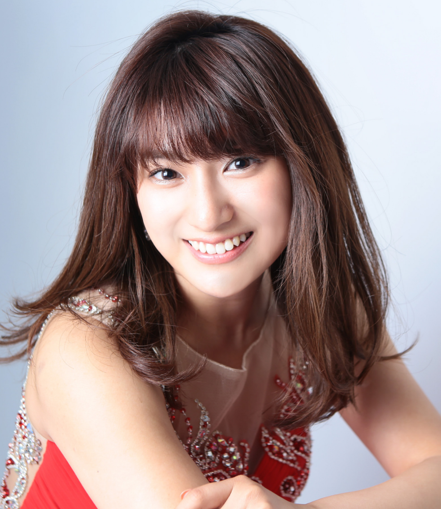 | 佐藤 瞳 / ソプラノ 岡山県出身。東京藝術大学声楽科を経て、同大学院修士課程独唱科を修了。卒業時に同声会賞を受賞。 オペレッタ『伯爵家令嬢マリツァ』リーザ役、『こうもり』イーダ役、オペラ『ドン・ジョヴァンニ』ツェルリーナ役で出演。BS-TBS「日本名曲アルバム」杜の音シンガーズとして出演中。福祉施設や被災地でのコンサートに出演するなど、音楽による社会貢献活動にも積極的に参加している。現在は株式会社パソナ ミュージックメイトの一員としても活動の場を広げている。Japan Popular Classics Orchestra所属アーティスト。 |
| 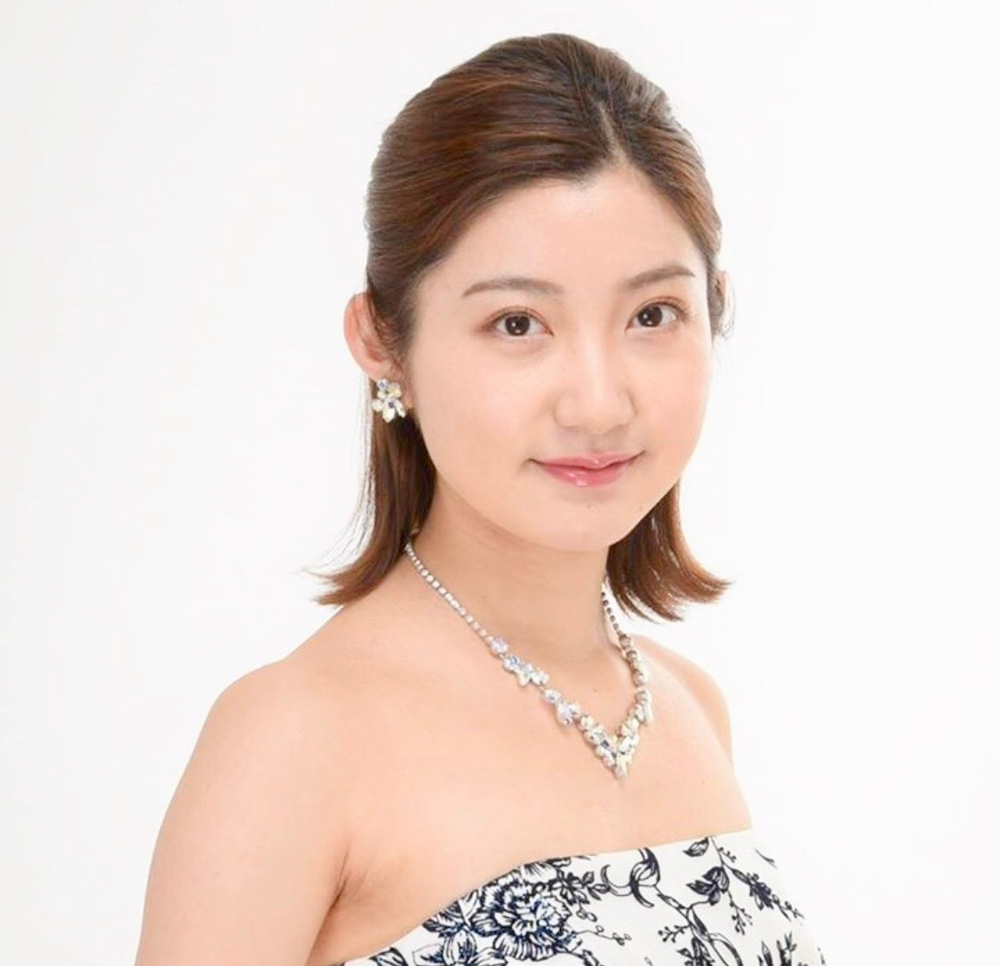 | 鈴木美郷 / ソプラノ 北海道札幌市出身。東京芸術大学音楽学部声楽科を経て、現在同大学院音楽研究科修士課程声楽専攻二年在籍中。学部在学中に安宅賞、卒業時に松田トシ賞、アカンサス音楽賞、同声会賞受賞。第66回全日本学生音楽コンクール高校の部全国大会第１位。第85回選抜高等学校野球大会開会式にて国歌独唱。第18回日本演奏家コンクール大学の部全国大会第1位。併せて準グランプリ賞、毎日新聞社賞受賞。第87回読売新人演奏会出演。2015・2016年度青山財団奨学生。2017年度東京芸術大学宗次德二特待奨学生。 |
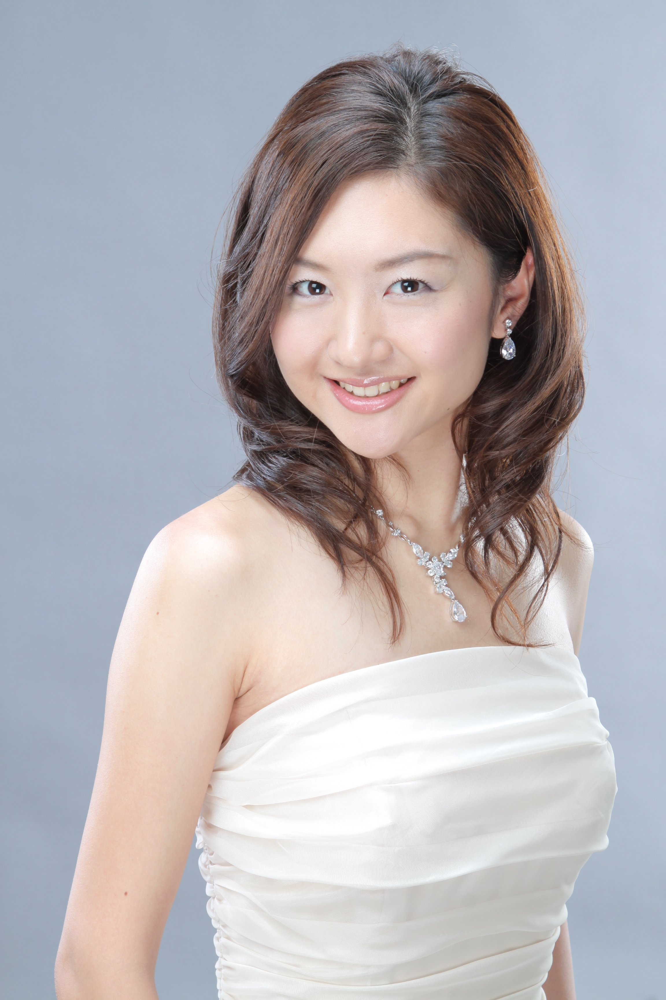 |
藤原唯/ ソプラノ 群馬県出身。国立音楽大学声楽専修卒業。同大学院声楽専攻オペラコース修了。二期会オペラ研修所第58期マスタークラス修了。小澤征爾音楽塾オペラプロジェクトⅩⅣ《こうもり》アデーレ役カヴァーキャスト、同公演こどものためのオペラ出演。東京二期会《フィガロの結婚》花娘Ⅰ役で二期会本公演デビュー。その他に秋田アトリオン音楽ホールコンサートオペラシリーズ《夕鶴》つう役等でオペラ出演。大倉由紀枝氏に師事。二期会会員。Chor stellaリーダー。 |
| 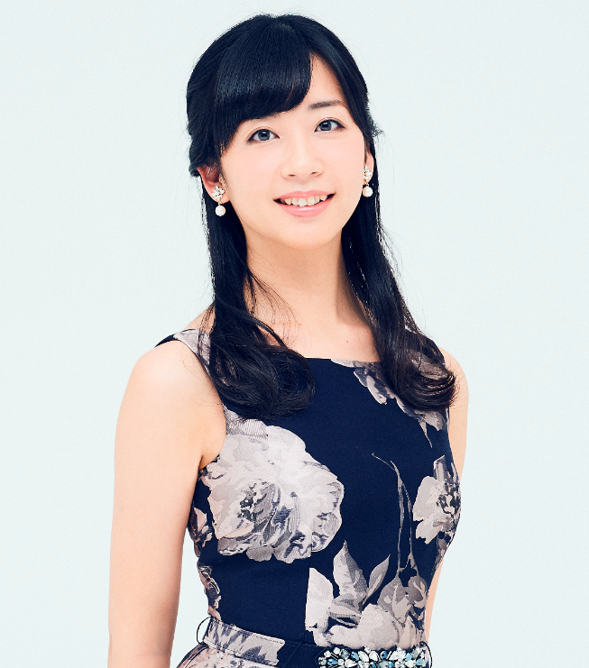 | 山田華 / ソプラノ 東京藝術大学声楽科卒業。在学中に安宅賞を受賞。二期会オペラ研修所マスタークラス修了時、優秀賞を受賞。NHK「精霊の守り人～最終章～」の挿入歌を担当。2011年ミス鎌倉。妹の麗と双子ソプラノデュオ「山田姉妹」として活動し、2017年2月「あなた」にてメジャーデビュー。また今年3月7日に最新アルバム「ふたつでひとつ」をリリース。全国でのコンサート活動の他、NHK「うたコン」や「思い出のメロディー」等、テレビやラジオにも数多く出演中。 |
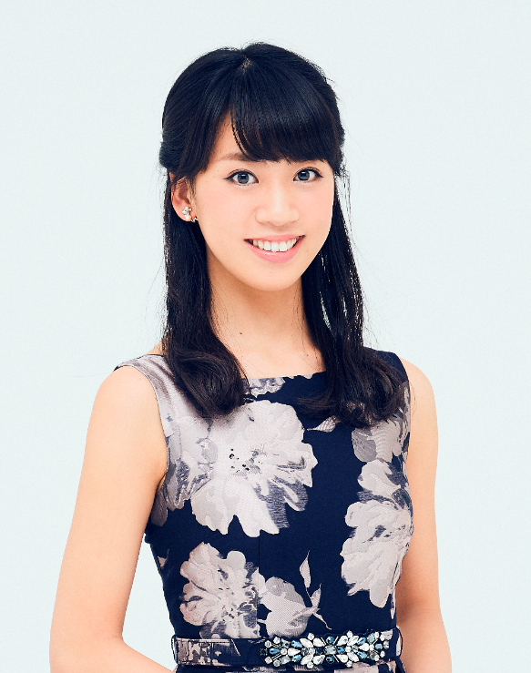 |
山田麗/ ソプラノ 国立音楽大学声楽科、及びオペラソリストコースを首席卒業。卒業時に武岡賞を受賞。二期会オペラ研修所マスタークラス修了時、優秀賞及び奨励賞受賞。第84回読売新人演奏会出演。TBS「3年B組金八先生」に出演。NHK「精霊の守り人Ⅱ」の挿入歌を担当。姉の華と「山田姉妹」として2017年2月「あなた」にてCDデビュー。2018年3月に「ふたつでひとつ」をリリース。全国でのコンサート活動の他、NHK「うたコン」や「思い出のメロディー」等、メディアにも数多く出演中。 |
| 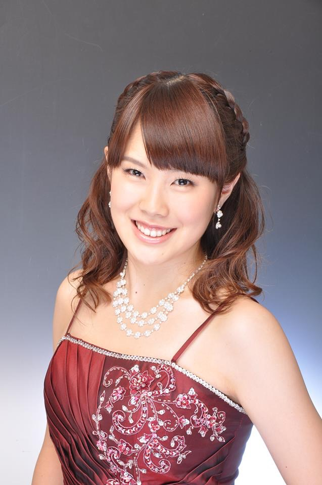 | 渡辺智美 / ソプラノ 山梨県出身。山梨県立甲府西高等学校卒業。東京藝術大学音楽学部声楽科卒業。平成27年度安宅賞、卒業時にアカンサス音楽賞、同声会賞を受賞。現在、同大学大学院音楽研究科修士課程オペラ専攻に在籍中。これまでに声楽を大槻義昭、大野徹也、櫻田亮の各氏に師事。 |
| 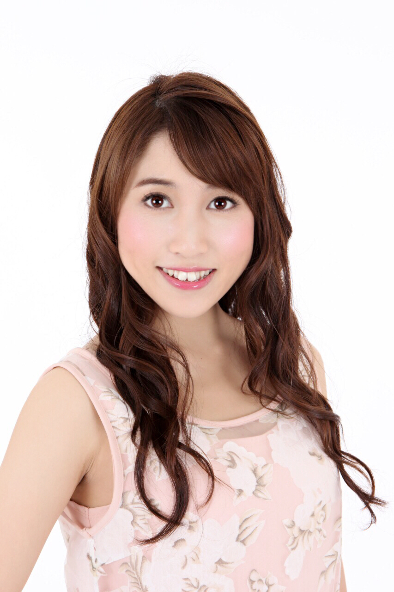 | 今井実希 / アルト 国立音楽大学声楽専修、同大学院声楽専攻修了。二期会オペラ研修所第59期マスタークラス修了。修了時に優秀賞を受賞。第14回東京音楽コンクールでの日本人最高位となる3位入賞をはじめ、その他コンクールで多数入選。2018年5月に二期会ニューウェーブ・オペラ劇場『アルチーナ 』モルガーナ役にてオペラデビュー。また、同年10月にはベートーヴェン作曲『第九』にて、ソプラノのソリストとして小林研一郎氏、日本フィルハーモニー交響楽団と共演予定。二期会会員。 |
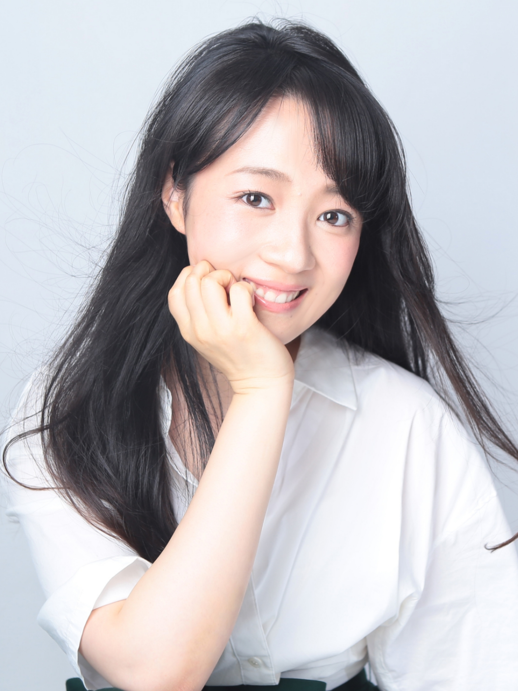 | 尾川詩帆 /アルト 東京藝術大学音楽学部声楽科卒業。在学中より、朗読劇「石棺 チェルノブイリの黙示録」、「ボイラーマンの妻」などに出演。卒業後、劇団四季ミュージカル「ウェストサイド物語」マリア役、 「夜への長い旅路」など朗読劇、ミュージカル、ストレートプレイに出演のほか、自身のソロライブを開催。現在、BS-TBS「日本名曲アルバム」出演中の杜の音シンガーズ、ユーキャンよりCD発売中のアンサンブル・コノハの一員として活動中。 |
| 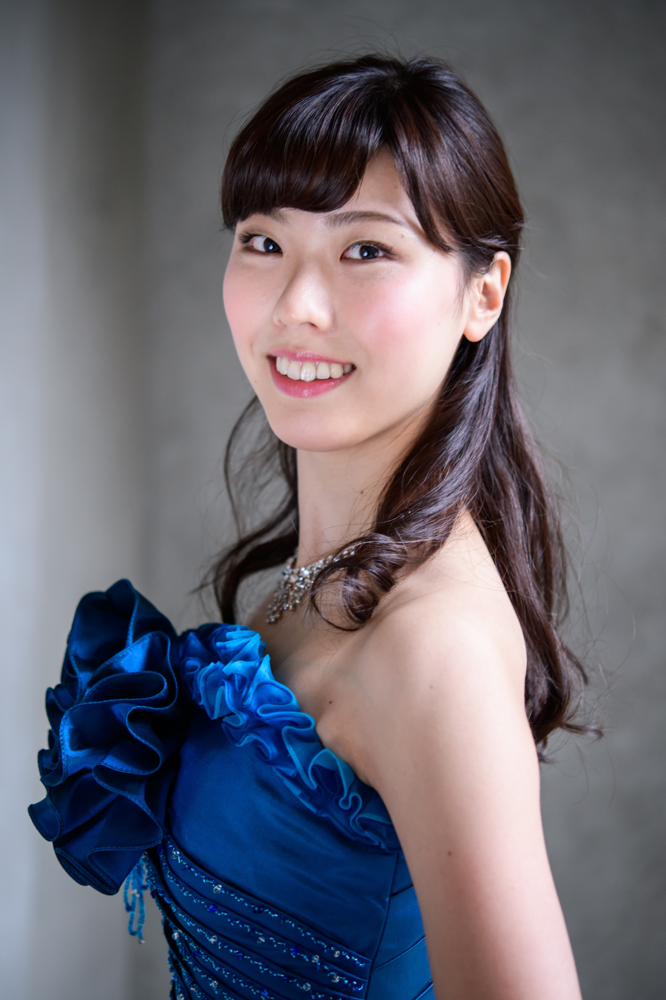 | 上久保沙耶 /アルト 高知県出身。幼少期よりピアノ・合唱を始める。土佐中高等学校、東京藝術大学声楽科を卒業。現在、同大学院修士課程オペラ専攻1年に在籍。 高知県教育文化祭高知県器楽・唱歌コンクールでは、第34回重唱の部、第39回独唱の部で最優秀賞、第27回日本クラシック音楽コンクール声楽部門において優秀賞を受賞。学部卒業時、同声会賞、アカンサス音楽賞を受賞。 これまでに声楽を小原伸枝、寺谷千枝子、手嶋眞佐子の各氏に師事。 |
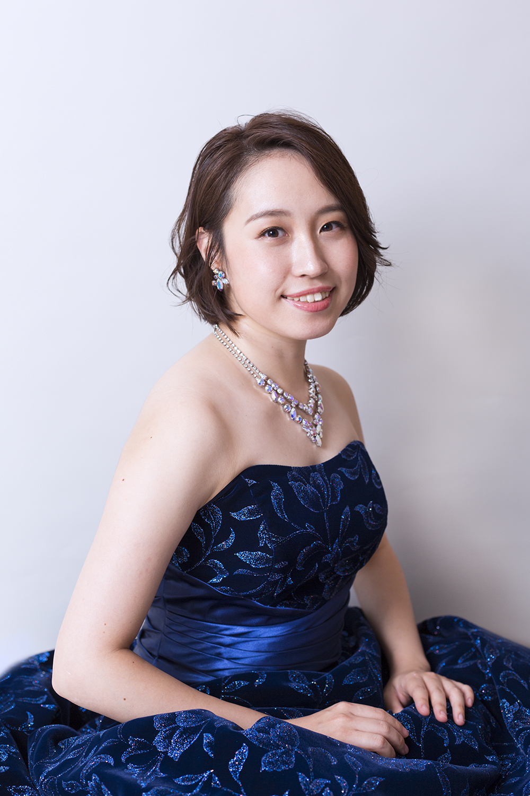 |
佐々木美歌/ アルト 東京藝術大学音楽学部声楽科卒業。電通育英会奨学生として東京藝術大学大学院修士課程を修了。現在同大学院博士後期課程に在籍中。学部卒業時にアカンサス賞並びに同声会賞を受賞。第24回奏楽堂日本歌曲コンクール入選。「コジ・ファン・トゥッテ」デスピーナ役、第61回藝大オペラ「フィガロの結婚」バルバリーナ役を務める。第66回「藝大メサイア」ソプラノソリスト。ジャズユニットTeatro Raffinatoの2ndアルバムにはゲストミュージシャンとして招かれる。藝大レーベル(ワーナー・ミュージック・ジャパン)より、藝大推薦学生として演奏が配信される。 |
| 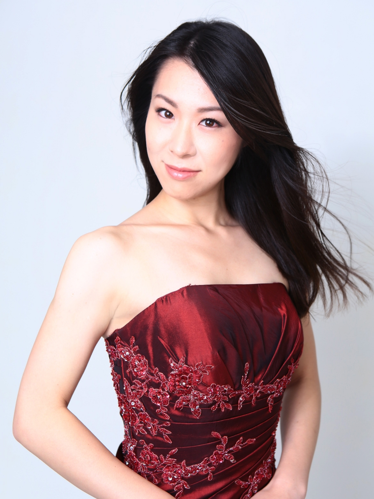 | 実川裕紀 /アルト 国立音楽大学声楽専修卒業。二期会オペラ研修所第56期マスタークラス修了、優秀賞受賞。第12回日本アンサンブルコンクール重唱部門優秀演奏者賞・全音楽譜出版社賞。第18回日仏声楽コンクール入選。第四回サンハートアンサンブルオーディション最優秀賞。オペラ「子供と魔法」「あまんじゃくとうりこひめ」表題役、青島広志作曲「黒蜥蜴」色江、「サド侯爵夫人」シャルロット等を好演。戴冠ミサアルトソロを務める。東京室内歌劇場、二期会会員。 |
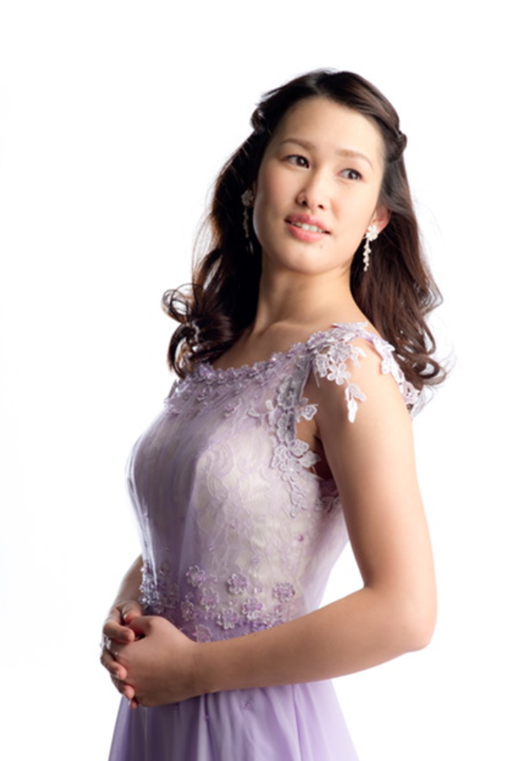 | 松浦 恵/ アルト 山形北高等学校音楽科、山形大学地域教育文化学部音楽芸術コース卒業を経て、東京藝術大学大学院音楽研究科修士課程声楽専攻(独唱)修了。G.マーラーの歌曲研究で修士号取得。第４回東京国際声楽コンクール第一位、および東京新聞賞受賞。第３回日光国際音楽祭声楽コンクール準大賞。数々の宗教曲のソリストをはじめ、全国各地で演奏活動を行なっている。声楽を藤野恵美子、藤野祐一、寺谷千枝子、永井和子各氏に師事。 |
| 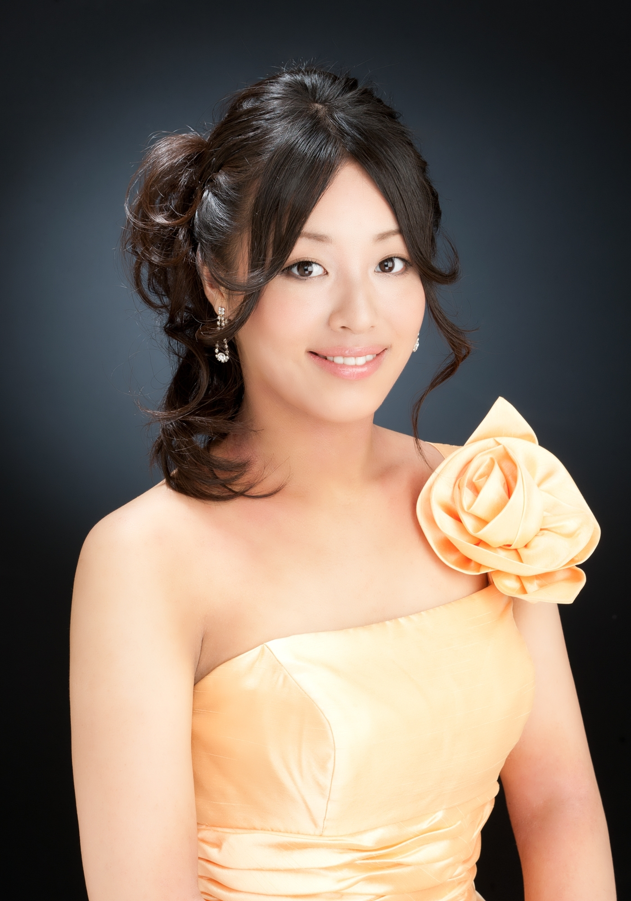 | 山下裕賀 / アルト 京都府出身。東京藝術大学音楽学部声楽科卒業。同大学院修士課程声楽オペラ専攻修了。 学部卒業時に同声会賞、大学院修了時に大学院アカンサス音楽賞、武藤舞賞を受賞。第21回コンセール・マロニエ21第1位。《フィガロの結婚》にてケルビーノ役、G.ビゼー《カルメン》にてメルセデス役で出演。宗教曲では「藝大メサイア」をはじめ、「第九」等のソリストを務める。現在、同大学院博士課程オペラ専攻2年次に在籍中。 |
| 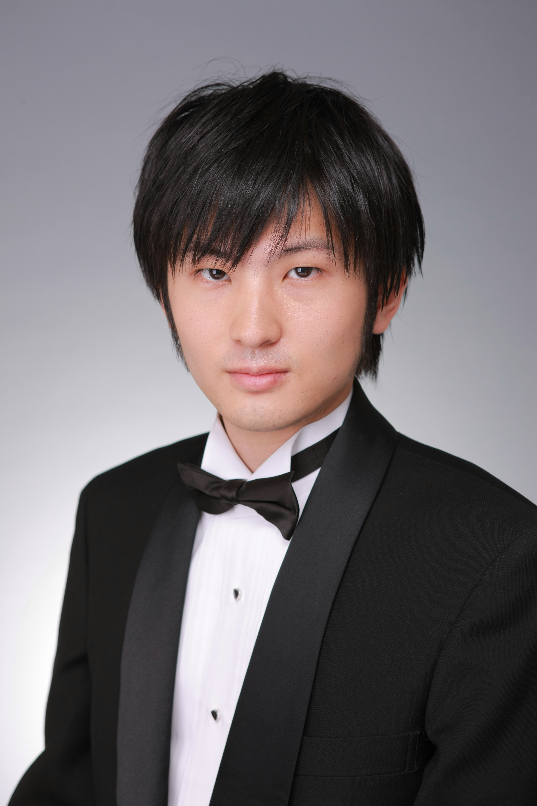 |
市川泰明 / テノール 東京都出身。東京音楽大学付属高等学校、東京芸術大学音楽学部声楽科を卒業。軽やかな声質を持ち味とし、ロッシーニ、ドニゼッティなどのオペラや、バッハ、ヘンデル、モンテヴェルディなどバロック時代の作品を主なレパートリーとする。 また少人数でのアンサンブルも得意としている。 これまでに声楽を栗林義信氏、川上洋司氏に師事。バロック声楽を野々下由香里氏に師事。現在、東京芸術大学修士課程古楽科バロック声楽専攻に在学中。 |
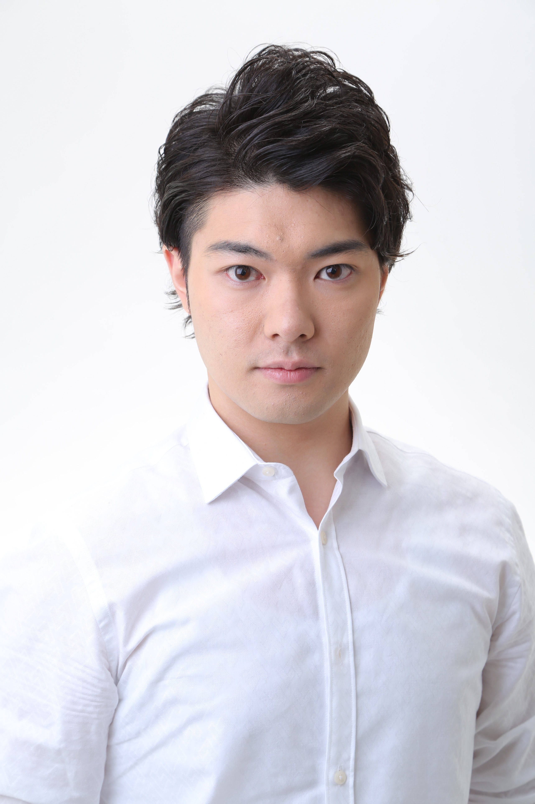 |
杉浦奎介 / テノール 東京都出身。東京藝術大学音楽学部声楽科卒業。卒業時にアカンサス賞及び同声会賞受賞。現在、同大学大学院音楽研究科声楽専攻在学中。 アンサンブル・コノハのメンバーとして活動中。TV「日本名曲アルバム」(BS-TBS)、「サマステミュージカルコレクション」(テレビ朝日)など。主な出演舞台「アイランド～かつてこの島で～」、「ロザリー」、「アップル・ツリー」、「スター誕生」、「サイト」、2017年「レ・ミゼラブル」出演。 |
| 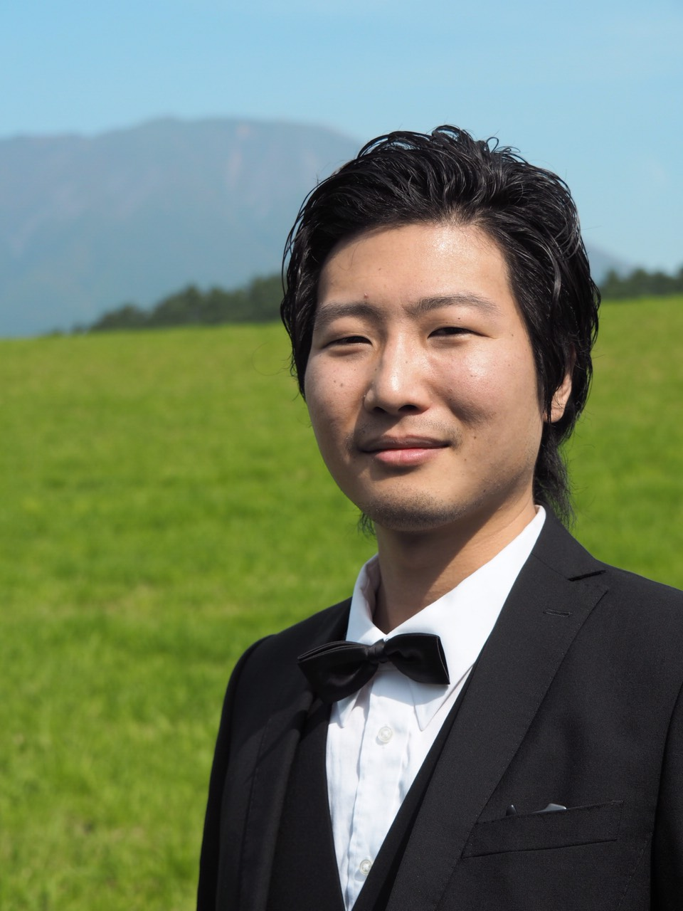 |
沼田臣矢 / テノール 東京芸術大学大学院修了。これまでに J. S. バッハ≪マタイ受難曲≫、G. F. ヘンデル≪メサイア≫、F. J. ハイドン≪天地創造≫など、宗教音楽のテノールソリストを務めている。またアンサンブリストとして Bach Collegium Japan、Harmonia ensembleなどに出演している。川越クラシック演奏家協会会員。ノヌラマクタラ室内楽団代表。 |
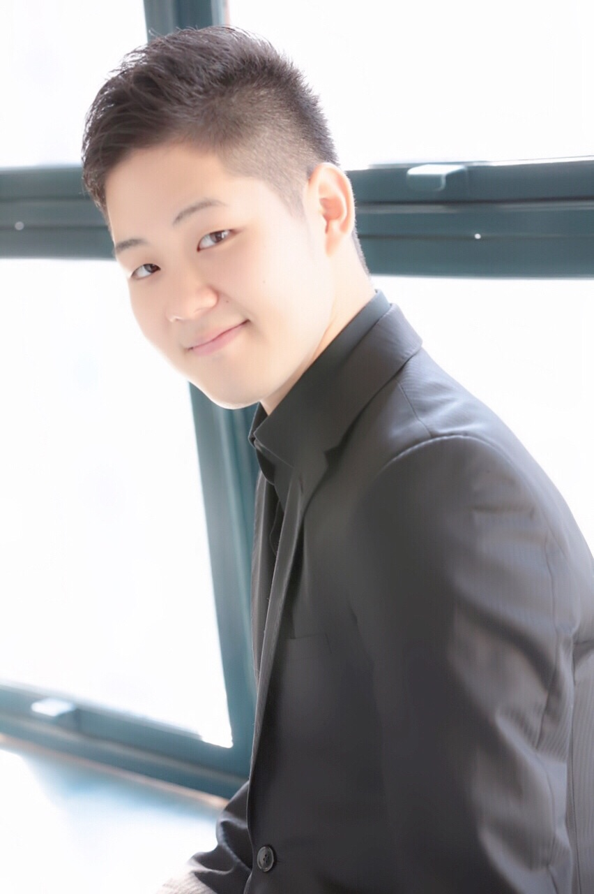 |
松岡大海 / テノール 石川県出身。 中、高校にて吹奏楽部に所属し、フレンチホルンを担当。高校三年より声楽を本格的に学ぶ。東京藝術大学音楽学部声楽科を卒業し、クラシックからポップスまでジャンルにとらわれず幅広く活動している。harmonia ensemble, AZ singers など数々の合唱団にも所属している。現在、BS-TBS 「日本名曲アルバム」に定期的に出演中。YouTube でも「ひろのうた」チャンネルで動画配信をしている。アメコミをこよなく愛している。 |
| 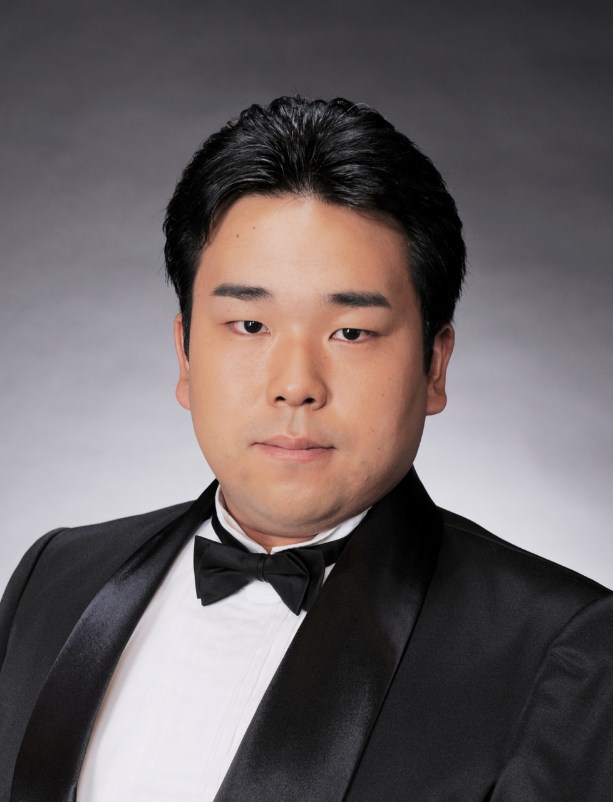 |
宮西一弘 / テノール 国立音楽大学音楽学部演奏学科声楽専修卒業。同大学院音楽研究科修士課程声楽専攻ドイツ歌曲コース修了。これまでに声楽を伊藤絢子、伊藤勲、佐藤峰子、澤畑恵美の各氏に師事。第２５回奏楽堂日本歌曲コンクール歌唱部門入選、第２０回友愛ドイツ歌曲コンクールにおいて奨励賞を受賞。 |
| 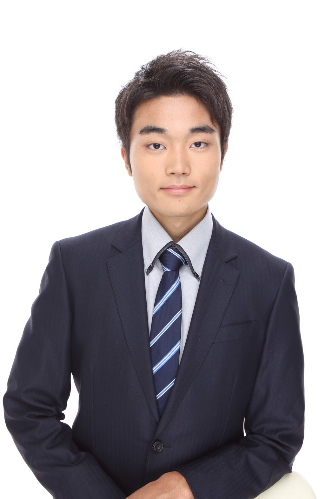 |
片倉 旭 / バス 鹿児島県出身。東京藝術大学声楽科卒業。卒業時に松田トシ賞、アカンサス音楽賞、同声会賞受賞。第88回読売新人演奏会出演。現在、東京藝術大学大学院音楽研究科修士課程1年に在籍。第67回全日本学生音楽コンクール全国大会第三位。これまでに原尚志、河野克典の各氏に師事。 |
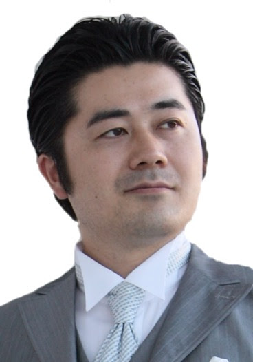 |
金沢平 / バス 東京藝術大学声楽科卒業。卒業時に同声会賞受賞。同大学院独唱科修了。第53回芸大メサイア、第23回台東区第九公演のバスソリストを務める。2005年木下牧子作曲オペラ「不思議の国のアリス」改訂版初演にドードー鳥役で出演。2013年12月仙台市でオペラ支倉常長「遠い帆」に伊達政宗役で出演。翌年8月新国立劇場にて再演を果たす。その他オペラや宗教曲のソリストとして数々の演奏会に出演し研鑽を積む。 |
| 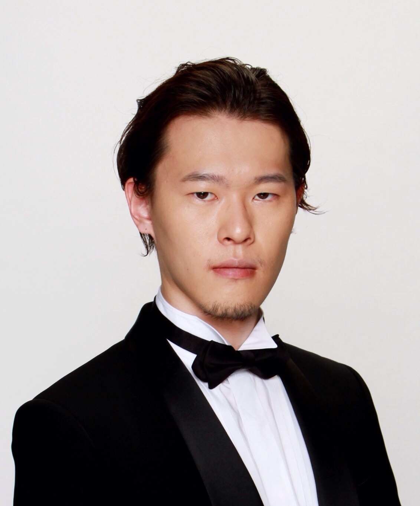 |
金子慧一 / バス 北海道出身。コントラバスを学んだ後、声楽に転向。東京音楽大学卒業。これまでに『オルフェオ』羊飼いⅣ、『魔笛』武士Ⅱ、『椿姫』グランヴィル、『カルメン』スニガ、『ラ・ボエーム』軍曹、コッリーネ等で出演。東京二期会においては、『ローエングリン』ブラバントの貴族Ⅳ及びハインリヒ(カヴァーキャスト)、『アルチーナ』メリッソ等で出演。今後は2019年11月に日生劇場『トスカ』シャルローネ役で出演予定。東京音楽大学非常勤研究員。二期会会員 |
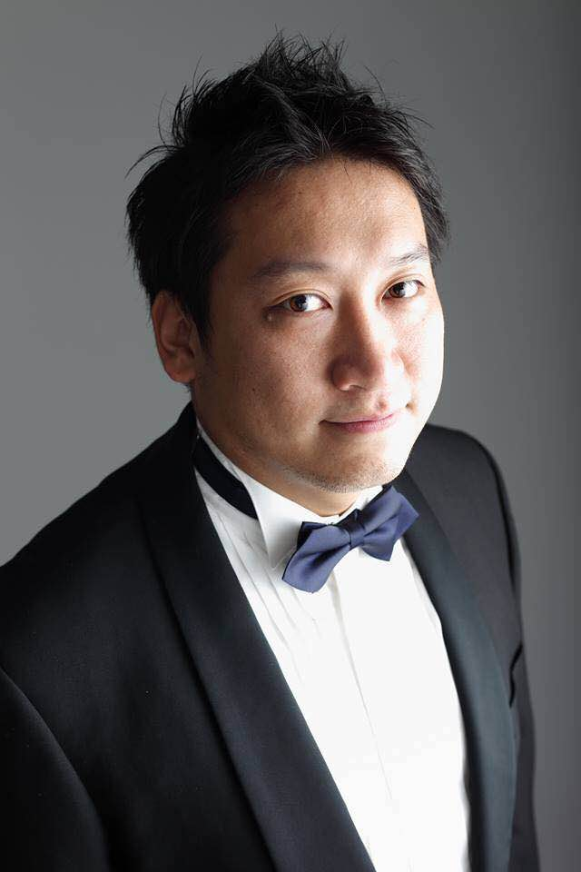 |
河野陽介 / バス 東京藝術大学音楽学部声楽科卒業。ソリストとして、ベートヴェン作曲「交響曲第九番」を中央区交響楽団、東京音楽大学学生オーケストラと、フォーレ作曲「レクイエム」をアンサンブル金沢と共演。合唱指導にも定評があり、飯森範親氏、松尾葉子氏等から絶賛を博した。地元である茨城県在住にこだわり、地域に密着した文化芸術の振興を目指しつつ、首都圏、四国、九州など全国で活動を展開する。劇団四季「ノートルダムの鐘」出演中。NHK教育「ムジカ・ピッコリーノ」原語・歌唱指導。第9回徳島音楽コンクール声楽部門大学・一般の部銀賞。 |
| 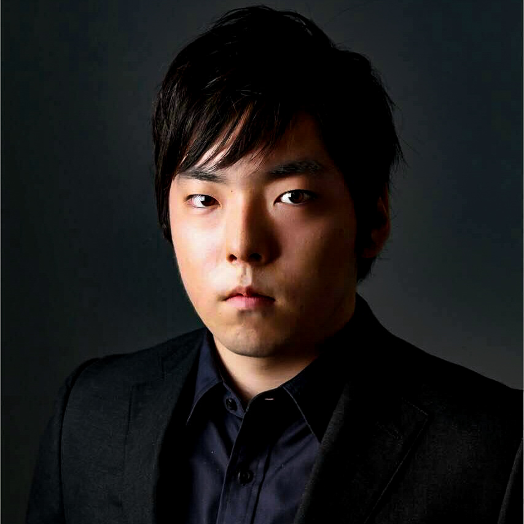 |
小池優介 / バス 東京藝術大学音楽学部声楽科卒業（卒業時に同声会賞、アカンサス賞を受賞）。現在、同大学の大学院音楽研究科声楽専攻（独唱）に在学中。これまでに、J.S.バッハ作曲「ロ短調ミサ曲」「マニフィカト」や数々の教会カンタータ、W.Aモーツァルト「戴冠ミサ」など、宗教曲のバスソリストを数多く務めている。声楽を、勝部太、川上洋司、萩原潤の各氏に師事。東京藝術大学バッハカンタータクラブ、ボーカルアンサンブル団体「うたかた」、Salicus Kammerchorに所属。 |